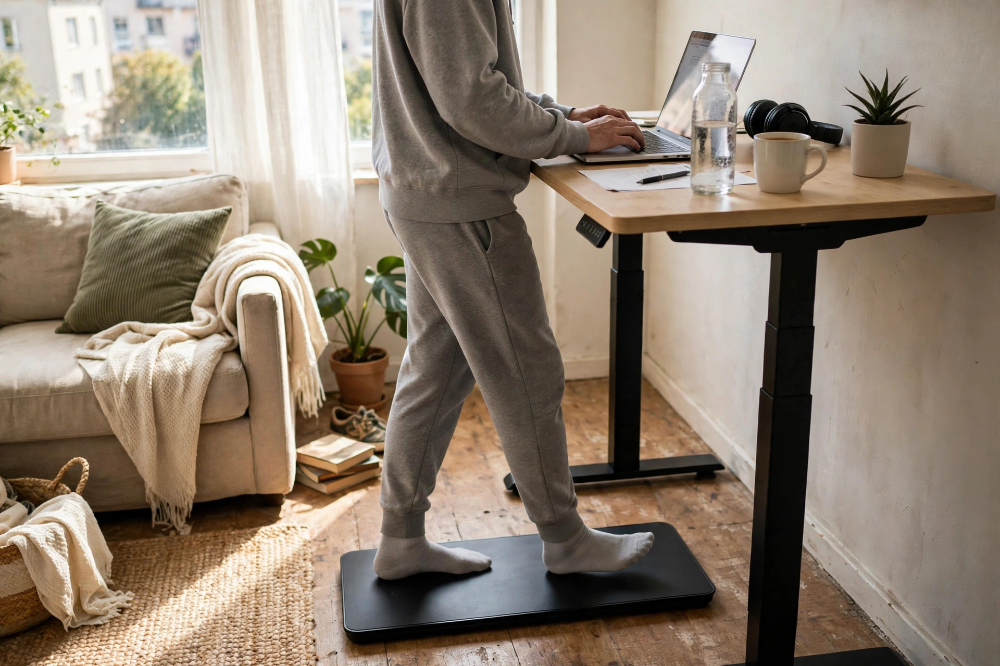

Best Mid-Size Power Stations Around 1,000Wh: EcoFlow, Jackery and Anker Compared
Which mid-size power station should I buy?
Three stations lead the roughly-1,000Wh class our research scored: the EcoFlow DELTA 2, the Jackery Explorer 1000 v2 and the Anker SOLIX C1000 Gen 2. All three run phones, lights and a fridge through a short outage. They differ on output, recharge speed and weight — the Anker recharges fastest, the EcoFlow pushes the most power and can grow with an extra battery, and the Jackery is the lightest to carry.
Our pick: EcoFlow DELTA 2 (1,024Wh) — the joint top score in our research, and the most flexible of the three: 1,800W of AC output, a fast wall recharge, and the only one here that can grow with an extra battery if your kit ever needs more.
Check price on AmazonAffiliate link to be added after approval. No price shown here — check it on Amazon.
At a glance
| Product | Best for | Check price |
|---|---|---|
| EcoFlow DELTA 2 | Most power, and the only one that can grow | Link pending |
| Anker SOLIX C1000 Gen 2 | Fastest recharge and highest output | Link pending |
| Jackery Explorer 1000 v2 | Lightest to carry, most capacity | Link pending |

We may earn a commission if you buy through links on this page. As an Amazon Associate I earn from qualifying purchases.
What you need
The three roughly-1,000Wh stations from the 25 products scored in our November 2026 research — the two joint top scorers and the class's fast-recharge option. This is the size class buyers are clearing out this season: CleanTechnica reported on 6 November 2026 that Jackery's Black Friday models, including its 1000-class stations, had largely sold out within days of the sale opening, after a late-October week when Jackery's sales at big US chains jumped several-fold. No prices here on purpose — check the price on Amazon, and check stock before you plan around one model.
EcoFlow DELTA 2 (1,024Wh)
A 1,024Wh LiFePO4 battery rated for 3,000 cycles to 80%+ capacity. The strongest all-round output of the three: 1,800W of AC across six outlets (2,700W surge), and EcoFlow's X-Boost can run some resistive loads up to 2,200W. It recharges from the wall at up to 1,200W — 0–80% in about 50 minutes — takes up to 500W of solar, and it is the only one of the three that can grow: an extra battery takes it to 3,040Wh. It weighs 27 lbs.
Watch out: The heaviest of the three, and its battery is rated to 80% after 3,000 cycles where the other two quote 4,000 cycles. It has an EPS pass-through mode for outages, but EcoFlow does not headline a millisecond switchover figure for it the way Anker does — check the current spec sheet if a desktop computer must ride through an outage without a blink.
Check price on AmazonAffiliate link to be added after approval. No price shown here — check it on Amazon.
Anker SOLIX C1000 Gen 2 (1,024Wh)
A 1,024Wh LiFePO4 battery rated for 4,000 cycles to at least 80% capacity. The highest output here — 2,000W (3,000W peak) across 10 ports — and the fastest recharge in the class: 0–100% in 49 minutes at 1,600W with UltraFast mode switched on, a figure Anker had certified by Guinness World Records in August 2025 as the fastest recharge for a 1kWh station. Solar input is 600W, the UPS switchover is 10ms, and it weighs 24.9 lb.
Watch out: It cannot grow — there is no extra-battery option, so 1,024Wh is all it will ever hold. UltraFast recharge has to be switched on in the Anker app, and Anker says to use its own AC charging cable for it.
Check price on AmazonAffiliate link to be added after approval. No price shown here — check it on Amazon.
Jackery Explorer 1000 v2 (1,070Wh)
A 1,070Wh LiFePO4 battery — the most capacity of the three — rated for 4,000 cycles to 70%+. AC output is 1,500W (3,000W surge) across three outlets, with a UPS switchover under 20ms. It is the lightest here at 23.8 lbs, with a folding handle, which is why our research scored it joint top for carrying room to room. Wall charging takes about 1.7 hours in standard mode, or about 1 hour in the app's Emergency Super Charge mode; solar input tops out at 400W.
Watch out: The fewest AC outlets of the three (three) and the lowest solar input (400W) — in a long outage it refills slowest from panels. Emergency Super Charge is switched on in the Jackery app, not on the unit, and the car charging cable is sold separately.
Check price on AmazonAffiliate link to be added after approval. No price shown here — check it on Amazon.
How to pick
- Start with the fridge test. A fridge is the biggest load most homes ask of this class. Check the station's continuous output and surge against your fridge's start-up draw — all three here clear a modern fridge, but the Anker's 2,000W leaves the most headroom for a second load at the same time.
- Treat recharge speed as the storm feature. When the grid comes back for an hour, a station that refills in that hour wins. That is the Anker's 49 minutes and the Jackery's roughly 1 hour in their fast modes — both switched on in an app, so set them up before the weather arrives.
- Let weight decide where it lives. At 23.8 lbs the Jackery moves room to room without a thought. The EcoFlow is 27 lbs — fine in one spot next to the fridge, less fine carried up stairs every outage.
- Decide now if you will ever need more. Only the EcoFlow grows, up to 3,040Wh with an extra battery. If there is any chance your kit becomes home backup later, that is the deciding fact; if 1,000Wh is the plan for good, pick on output and recharge instead.

Photos still needed
No hands-on test photos exist yet for this guide. Still missing — needs real at-home photos of the actual models:
- Each of the three stations next to a fridge, cable visible
- Each station's display while recharging, fast mode on
- The three stations side by side for a true size comparison
- A station charging from a folding solar panel in daylight
Comparison
| Specification | EcoFlow DELTA 2 | Anker SOLIX C1000 Gen 2 | Jackery Explorer 1000 v2 |
|---|---|---|---|
| Capacity | 1,024Wh | 1,024Wh | 1,070Wh |
| Battery | LiFePO4, 3,000 cycles to 80%+ | LiFePO4, 4,000 cycles to 80%+ | LiFePO4, 4,000 cycles to 70%+ |
| AC output | 1,800W (2,700W surge), 6 outlets | 2,000W (3,000W peak), 10 ports | 1,500W (3,000W surge), 3 outlets |
| Fastest wall recharge | 0–80% in about 50 min; full in about 80 min | 0–100% in 49 min (UltraFast mode) | 0–100% in about 1 hour (Emergency Super Charge); about 1.7 hours standard |
| Solar input | Up to 500W | Up to 600W | Up to 400W |
| Weight | 27 lbs | 24.9 lb | 23.8 lbs |
| UPS / pass-through switchover | EPS mode (no headline ms figure) | 10ms | Under 20ms |
| Expandable | Yes — up to 3,040Wh with an extra battery | No | No |
How we picked
These 3 stations are part of the 25 products scored in HomeTryout's November 2026 research across the four test areas. The EcoFlow DELTA 2 and the Jackery Explorer 1000 v2 were the joint top scorers in that research; the Anker SOLIX C1000 Gen 2 scored next and leads the class on recharge speed. Specs in this guide come from the manufacturers' own pages, listed in Sources below.
| Products scored in our research | Products in this guide | Hands-on tests run |
|---|---|---|
| 25 | 3 | 0 — none yet |
What we have not done yet: no product in this guide has been tested hands-on by us. When we test one at home, this box will say so, with the date.
Troubleshooting
The station trips or shuts down when the fridge starts
Check the fridge's start-up draw against the station's surge rating, not just its continuous output — a motor draws a burst when it starts. If it still trips, run the fridge on its own circuit from the station and move everything else to a power bank for a while. EcoFlow's X-Boost helps with resistive loads like heaters; it is not a fix for motor surge.
It charges much slower than the headline time
Check the fast mode is actually on. The Anker's 49 minutes needs UltraFast switched on in the Anker app and Anker's own AC cable; the Jackery's roughly 1 hour needs Emergency Super Charge switched on in its app, and its standard mode is about 1.7 hours. Solar times assume the station's maximum panel wattage in full sun — a smaller panel, or shade, stretches them a lot.
The model I want is sold out everywhere
That is the season, not just you — reporting this month describes 1000-class stations selling out within days of the Black Friday sales opening. Check the manufacturer's own store and its stated restock dates, and compare the other two stations in this guide before paying a markup to a reseller: the three are close enough that the one in stock is usually the right one.
Frequently asked questions
Which of the three is best for running a fridge?
Any of the three runs a modern fridge. The Anker SOLIX C1000 Gen 2 gives the most headroom with 2,000W of continuous output, and its 10ms UPS switchover is the fastest here. The EcoFlow DELTA 2 is close behind at 1,800W, and it is the only one that can add an extra battery later.
Why are power stations selling out right now?
Demand spiked this season. CleanTechnica reported on 6 November 2026 that Jackery's Black Friday models — including its 1000-class stations — had largely sold out within days of the sale opening, after a late-October week when Jackery's sales at big US chains jumped several-fold. Winter storm warnings and rising electricity bills are the drivers named in current reporting.
Is 1,000Wh enough for a whole house?
No. A roughly-1,000Wh station covers the essentials — phones, lights, Wi-Fi and a fridge cycled carefully — through a short outage. Whole-home backup is a bigger class of machine, covered in our 72-hour kit power stations guide.
Which one recharges fastest?
The Anker SOLIX C1000 Gen 2: 0–100% in 49 minutes with its UltraFast mode switched on in the Anker app. The Jackery Explorer 1000 v2 takes about 1 hour in its app's Emergency Super Charge mode (about 1.7 hours in standard mode), and the EcoFlow DELTA 2 reaches 80% in about 50 minutes and a full charge in about 80 minutes.
Sources
- EcoFlow — DELTA 2 Portable Power Station (US product page and user manual V1.0): https://www.ecoflow.com/us/delta-2-portable-power-station
- Jackery — Explorer 1000 v2 Basic Information: https://www.jackery.com/blogs/jackery-faqs/explorer-1000-v2-basic-information
- Anker SOLIX — C1000 Gen 2: https://www.ankersolix.com/c1000-gen2?ref=A17631A1_listing
- CleanTechnica, 6 November 2026 — "As Jackery Inventory Sells Out, Are Portable Batteries Set To Take Off?": https://cleantechnica.com/2026/11/06/as-jackery-inventory-sells-out-are-portable-batteries-set-to-take-off/
- HomeTryout affiliate business opportunity report, 9 Nov 2026 — product scores (product-scores.csv).
- Ready.gov / FEMA — 72-hour emergency kit guidance (one gallon of water per person per day, three days of food, NOAA radio, flashlight, first aid).
Keep going
Prep & PowerPortable Power Stations for a 72-Hour Home Kit: What Actually Matters Before You Buy
What actually matters when buying a portable power station for a 72-hour home kit: size, recharge, and what must stay on.
Read the guide → Prep & Power
Prep & PowerSmall Power and Emergency Gear for a 72-Hour Kit
The small, cheap kit items that complete a 72-hour kit after the big power station: a power bank, two radios, a water filter and food.
Read the guide →
Home FitnessWalking Pads for Small Spaces: Quiet, Foldable, and Actually Usable in an Apartment?
Are walking pads quiet, foldable and actually usable in an apartment? What to check before you buy.
Read the guide →